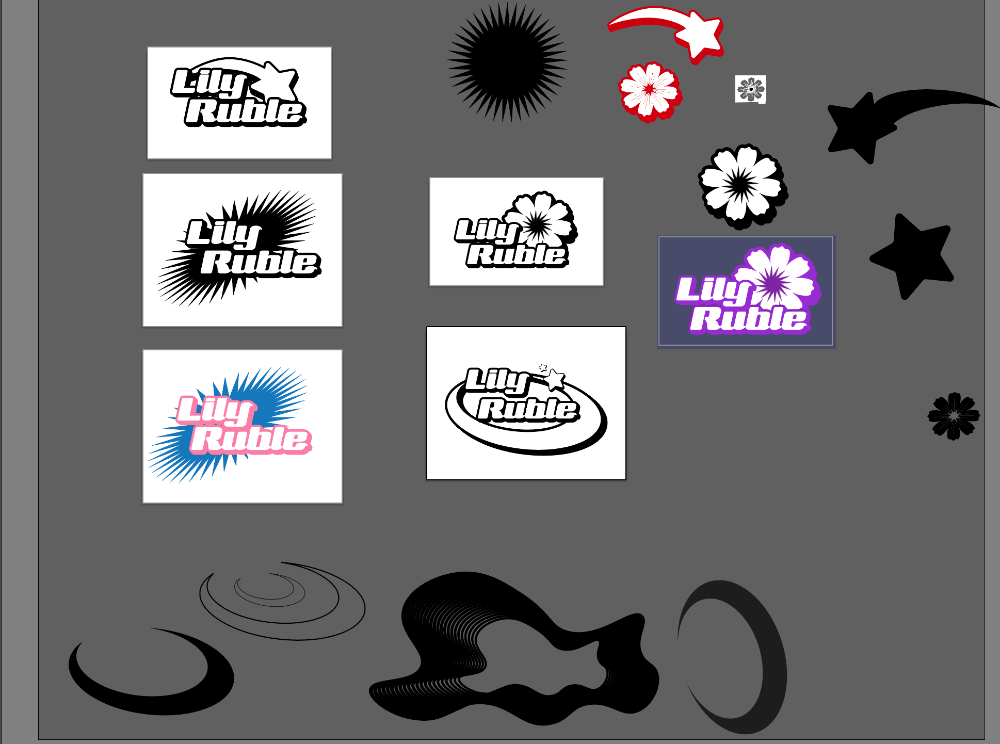

I decided to embody an early 2000s street style to my logo to make it a bit playful as well. The goal was to keep the favicon simple, but still have personality. I decided to go with a flower because it will build my brand and help people remember my name. It also aligns with my graphic design style.
